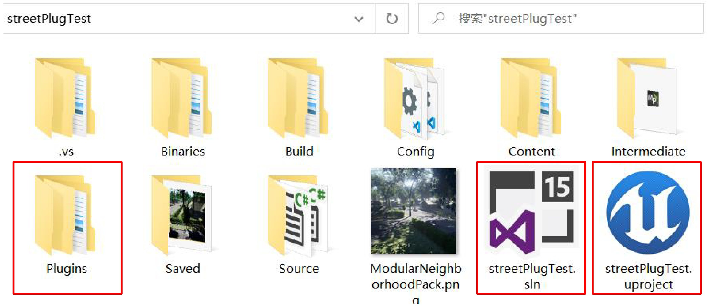
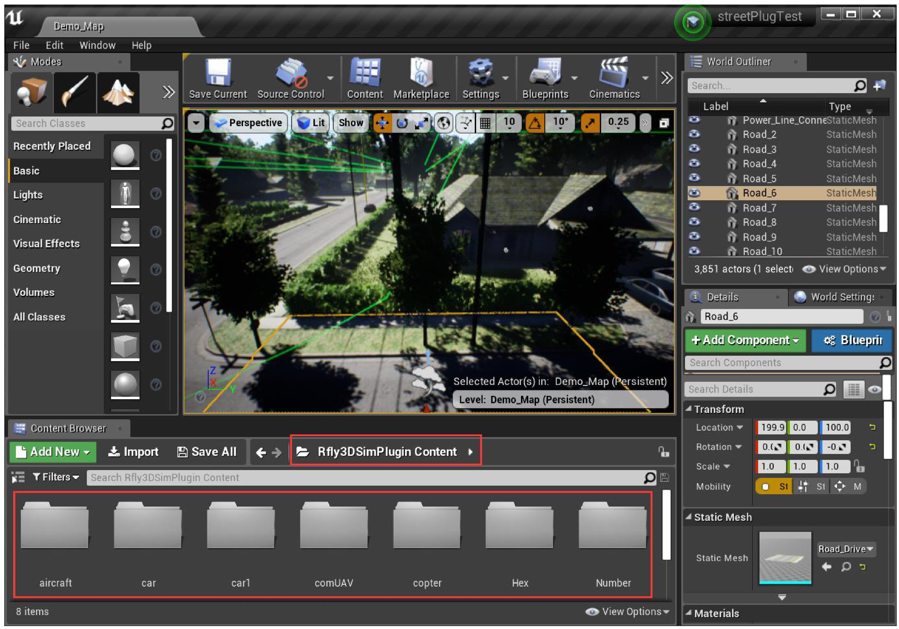
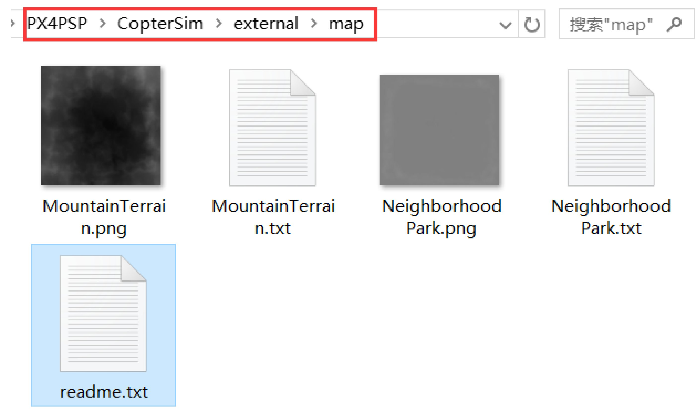

2. Scenes¶
2.1. 3D Scenes Based on UE4¶
As shown in Fig.A.2c, CopterSim provides an ability to select different display scenes. The default scene is “3DDisplayprogram”, which is based on a lightweight 3D engine—Ogre. It has low requirements for computer configurations, but the loading speed is slow, and the display performance is not realistic enough. As shown in Fig.A.7, click the drop-down box of “3D Scene Selection” to check all other available 3D scenes (the corresponding installation files are acquired along with the serial number), including “MountainTerrain” and “NeighborhoodPark”, which are more realistic 3D scenes based on UE4 3D engine.
Fig. A.7 3D scene selection¶
After selecting the corresponding scene, manually open the corresponding 3D scene software to switch between different 3D scenes. FigureA.8 presents the 3D UE4 simulation scenes, which have more powerful functions and more convenient extensibility.
Fig. A.8 3D simulation scene based on UE4¶
2.2. Developing 3D Scenes Through UE4¶
Through the UE4 plugin, readers can quickly build their own flight scenarios in UE4. The specific procedure is listed as follows.
(1). Create a new UE4 scene project. As shown in Fig.A.9, readers can purchase or develop a 3D scene project based on UE4 (engine version should be 4.22 or above, compiler version should be Visual Studio 2017 or above). The detailed process will be not introduced here because it can be found in the official tutorial .
(2). Get the UE4 plugin file. Unzip the “Rfly3DSimPlugin.zip” plugin file (the corresponding source code can be acquired along with the serial number) and copy it to the “Plugins” folder (create it manually if the folder does not exist) of the UE4 project shown in Fig.A.9.
Fig. A.9 Custom UE4 3D scene project folder¶
(3). Generate a “.exe” executable file. Click the UE4 project file ending with “.uproject” (see Fig.A.9) to open the UE4 editor. As shown in Fig.A.10, the plugin “Rfly3DSimPlugin” will be automatically loaded to the UE4 project, and the plugin contents can be viewed in the UI of the UE4 editor. In the UE4 editor, a “.exe” executable file can be obtained by simply setting the initial viewpoint, compiling the code, and package the whole project for the Windows environment.
Fig. A.10 UE4 editor¶
(4). Export the map terrain data. Select the terrain file in UE4, exported to a “.png” format file, and store three key position points to a “.txt” file. Then, copy the resulting “.png” and “.txt” files to the “CopterSimexternalmap” directory (see Fig.A.11). Finally, after restarting CopterSim, readers can select the new developed 3D scene from the drop-down menu shown in Fig.A.7.
Fig. A.11 Importing terrain mesh data into CopterSim¶